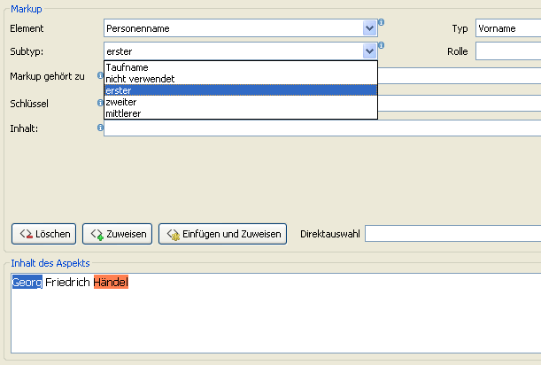
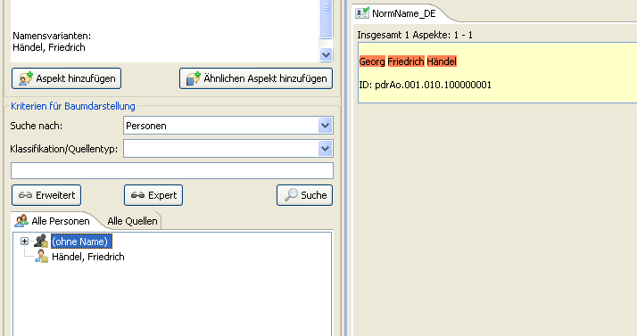

Before specific information about Georg Friedrich Händel can be entered (in the form of aspects), a new person has to be created. This can be done by clicking on the icon, on which a person and a wand are picture (it lies in the upper left corner of the window, in the icon list).

The aspect-editor will then open in which the primary information, the name, can be entered.

First the semantic classification that the project would like to have will be added. To do this, press the button with the green plus ("‘Add a Semantic Statement"’) to the far right of the text field under the label “Classification”. Select from the list the project “Musici” and the classification “Nome di norma”.

Next, the name of the person can be entered in the text field “Content of Aspect - Notification”.

With the help of markup, metadata will now be added to the text. The first and last name can be marked as such, and how this is done is the same for both. Mark with your mouse or keyboard the last name “Händel” and in the section of the window titled “Markup” choose for the text field “Element”the option “Personenname”, for “Type” choose “Nachname” and for “Subtype” select “Geburtsname”.

Click the button with a green cross labeled “Set”. This will mark the word “Händel” as a last name, which should now be highlighted in red.

The first and middle name can be marked in the same way. “Georg” can be marked as “Vorname” in the Type field and as “erster” in the Subtype field.

After the markup for “Georg” has been added, the middle name “Friedrich” can marked up as well. This can be done with the Subtype "‘zweiter"’. The text field of “Content of Aspect - Notification” should now look like the following:

Next, at least one reference needs to be cited. Choose the tab labeled “References” and click on the button “Select” to search for the book, in this case “Buchtitel” by August Reissmann. The quality level can be then be selected, in this case “certain”.

To finish, click the save button found at the bottom of the window. The person has now been created and can be found in the tree-view in the tab “All Persons” under the letter “h”. The person will have one aspect which contains the name Georg Friedrich Händel
